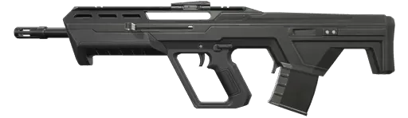

Vandal
La Vandal inflige mucho daño a larga distancia y es ideal para aquellos que se centran en acertar tiros a la cabeza Sin embargo, va perdiendo estabilidad con el tiempo.

Phantom
En modo automático es perfecto para los encuentros en espacios reducidos, mientras que en ráfagas cortas son la opción indicada en cualquier otra situación. Es mucho más precisa si no se dispara en movimiento.

Bulldog
Rifle mas barato que sus hermanos mayores (vandal,phantom) pero que posee un poderoso modo alternativo dispone de una mira que permite disparar ráfagas cortas con precisión a media y larga distancia.